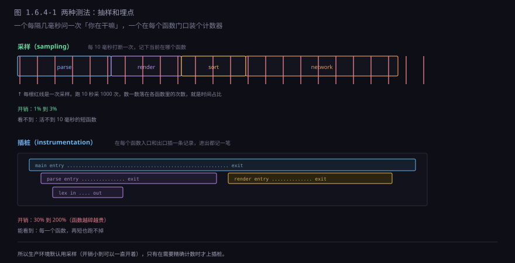
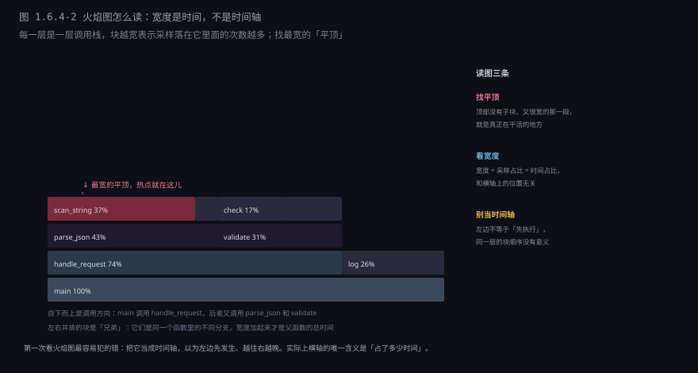
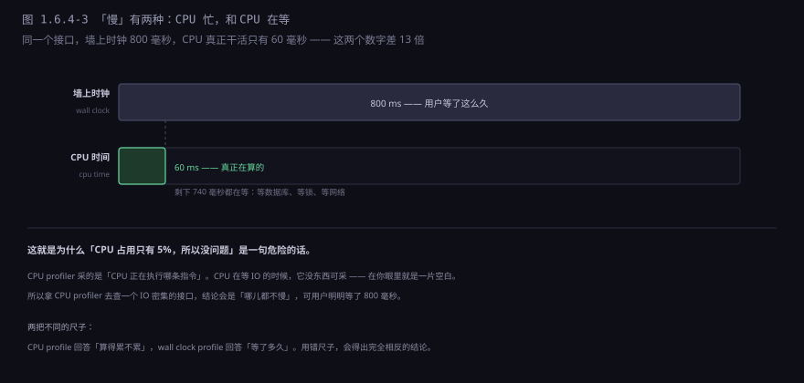
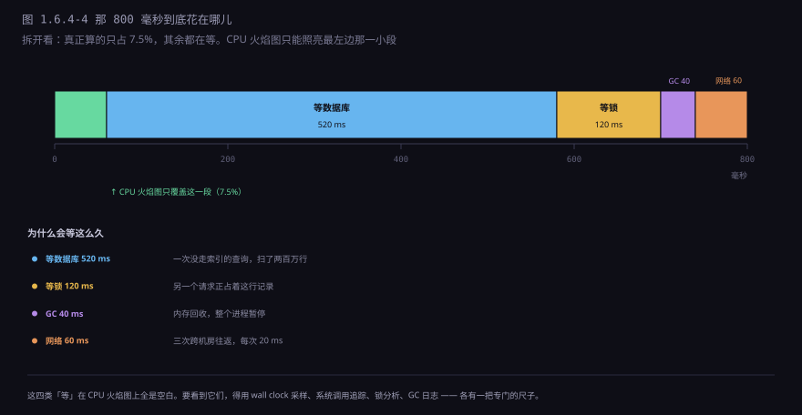
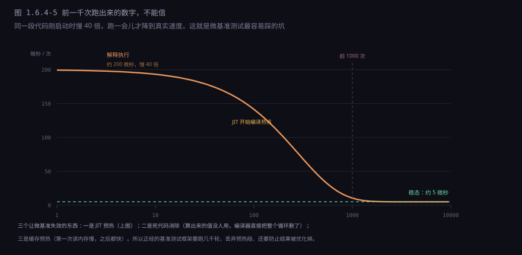
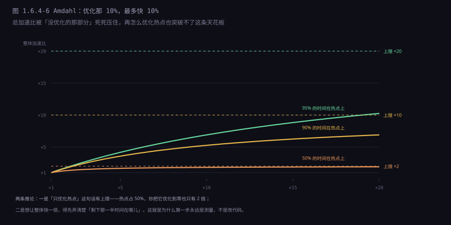

约 0.6 万字 · 6 张图 · 读完你能说清采样和插桩的区别、 火焰图的横轴为什么不是时间、为什么「CPU 只占 5%」是一句危险的话， 以及为什么你自己写的计时器量出来的数字经常是假的
System.currentTimeMillis() 计时器，量出来的数字经常是假的。
有个流传很广的观察：程序员对自己代码性能的猜测，准确率大约三成。 这不是能力问题，是三件事叠在一起造成的：
一是不知道哪段被执行了多少次。 一行看起来很轻的代码，如果在一个百万次的循环里，它的总耗时可能超过外面那坨复杂的逻辑。
二是不知道编译器做了什么。 你以为的那次函数调用，可能被内联了；你以为的那次内存读，可能在寄存器里；你以为的那个循环，可能被向量化了。
三是不知道硬件在干什么。 同样的指令数，顺序访问内存和随机访问能差十倍；分支可预测和不可预测能差五倍。 这些都不在源码里。
所以性能分析器存在的意义，不是「让程序变快」， 而是把「我以为」换成「数据显示」。 它不优化任何东西，它只是告诉你时间到底花在哪儿。
所有性能分析器，原理上都归到两类：隔一会儿问一下，或者在每个门口装个计数器。

| 采样 | 插桩 | |
|---|---|---|
| 做法 | 定时中断，记下当前指令地址 | 函数入口出口各插一条记录 |
| 开销 | 1% 到 3% | 30% 到 200%，函数越碎越贵 |
| 精度 | 统计意义上的占比 | 精确的调用次数与耗时 |
| 盲区 | 活不到采样间隔的短函数 | 几乎无盲区，但会改变程序行为 |
| 用在哪 | 生产环境常开 | 本地排查、单元级测量 |
生产环境默认用采样，理由很直接：插桩会把程序变慢一倍，而变慢一倍的系统和真实的系统不是同一个系统。 你测出来的瓶颈，可能是插桩本身造成的。
各语言生态里现成的工具大概是这样：
| 环境 | 工具 | 能测什么 |
|---|---|---|
| Linux 通用 | perf record / perf report | CPU 采样，任何语言都能用，不需要改代码 |
| C / C++ | perf、gprof、Valgrind | CPU 热点、调用次数、内存错误 |
| Go | pprof | CPU、堆、goroutine 阻塞、锁竞争，一个工具全包 |
| Java | async-profiler、JFR | CPU、分配、锁、GC，能画出混合火焰图 |
| Python | py-spy、cProfile | 前者能直接 attach 到运行中的进程，不用改代码 |
| 浏览器 / Node | DevTools 的 Performance 面板 | JS 执行、渲染、网络，按时间轴对齐 |
挑工具的原则只有一条：先确定要测哪一层，再挑对应那一层的工具。
拿 perf 去查一个在等数据库的接口，你会看到 CPU 一片空闲，
然后误以为「没有瓶颈」——这个坑前面刚讲过，但每年还是有人掉进去。
「每隔十毫秒随便看一眼」，听起来很不靠谱。它准是因为大数定律。
假设一个函数占了总时间的 30%。那么随机看 1000 次，落在它里面的次数大约是 300 次，
误差在 ±3% 左右（大致是 1/√n 的量级）。
想看更准就多采——采一万次，误差降到 1%。
这个「随机」是有保证的：采样是由定时器触发的，落点和你代码的执行节奏没有关系。 所以它天然是均匀抽样，不需要任何技巧。
它确实有一个盲区：活不到一个采样间隔的函数，一次都采不到。 间隔是 10 毫秒，一个只跑 1 毫秒的函数，被采到的概率是 10%—— 跑十次能碰上一次。如果一个函数只被调用一次、只花 0.5 毫秒， 它在报告上就完全不存在。
采样结果最后通常画成一张火焰图。它的形状很唬人，但规则只有三条。

规则一：横轴是「占比」，不是时间。 这是最常见的误读。左边不等于「先执行」，右边不等于「后执行」， 同一层里两个块挨在一起也不代表它们有先后关系。 横轴唯一的含义是「宽度 = 多少比例的时间」。
规则二：纵轴是调用栈深度。 自下而上是「谁调用了谁」。下面的块一定比上面的宽，因为它包含上面所有子块的时间。
规则三：找「平顶」。 一个块如果很宽、下面没有子块，说明时间就花在它自己身上，而不是它调用的东西上。 这就是优化的下手处。反过来，一个块很宽但下面还有很宽的子块， 说明它只是个「过路」的，真正的时间在更深处。
顺便打消一个常见的困惑：火焰图里的颜色没有任何含义。 红黄绿只是用来区分相邻的块，方便眼睛跟踪边界；有些工具按函数名哈希上色， 有些按模块上色，但都不是「越红越热」。真正要看的只有宽度。
还有一种变体叫冰柱图（icicle graph），形状上下颠倒，根在顶上。 以及一个更有用的变体：off-CPU 火焰图—— 它画的不是「CPU 在跑什么」，而是「线程被阻塞在哪儿」。 排查「等锁」「等 IO」这类问题时，后者才是对的图。下一节就讲这个区别。
前面所有内容都建立在一个隐含前提上：时间花在 CPU 上。 可真实系统里，大量的时间是「等」出来的。

这就是那句话危险的原因：「CPU 占用只有 5%，所以没问题」。 CPU 闲，恰恰可能是因为它在等——等数据库、等锁、等网络、等磁盘。 系统的瓶颈不在 CPU 上，不代表没有瓶颈。
对应的工具也不同：
| 你想知道 | 该用的工具 | 它看的是什么 |
|---|---|---|
| CPU 算得累不累 | CPU profiler（采样） | CPU 正在执行哪条指令 |
| 线程等了多久 | wall clock profiler | 线程当前在等什么 |
| 卡在哪个系统调用 | strace / perf trace | 每一次进出内核 |
| 锁竞争多严重 | 锁分析器 / 线程 dump | 谁占着锁、谁在排队 |
| 数据库慢在哪 | 慢查询日志 / EXPLAIN | 每条 SQL 的执行计划 |
把刚才那个接口拆开，时间分布是这样的：

这个分布解释了一件事：优化 CPU 代码，最多只能省下那 60 毫秒。 就算你把计算部分优化到零，接口也只从 800 变成 740——用户根本感觉不到。 真正该动的是那 520 毫秒的查询：加一个索引，可能直接降到 5 毫秒。
这就是 Amdahl 定律的直觉版本（第 10 节细说）： 你只能优化你测到的那部分，而最大收益永远在占比最大的那一段。
内存问题分两类，排查方法完全不同。
一类是「占用高但不漏」。 程序合理地把大量数据放在内存里（缓存、索引、缓冲区），这没问题。 要看的是分配热点：哪些代码在疯狂申请对象。 分配本身很快，但分配多了会触发 GC，GC 一停，所有线程都停。
另一类是「真的在漏」。 对象该被回收却没被回收，内存一路涨到 OOM。 排查方法是拍两次堆快照，对比差集： 跑一段时间拍一张，再跑一段时间拍第二张，两张之间「多出来的那些对象」就是嫌疑犯。 直接看总量没意义，因为正常业务也会涨。
对用户来说，内存问题最终都表现为同一个东西：GC 停顿。 堆越大、活对象越多，一次回收要扫描的范围越大，停得越久。 一个每秒处理几千请求的服务，如果每十秒停 200 毫秒， 那么每十秒就有两百毫秒的请求全部超时——这比平均慢 10% 严重得多。
这两类等待有个共同点：它们不在你的代码里。 所以你盯着源码看一辈子也看不出来。
IO 的排查从系统调用开始。
strace 能把进程每一次进出内核都打出来：
打开了哪个文件、读了多少字节、等了多久。
常见的坑是「小 IO 太多」——一次读 4 KB，读一千次，就是一千次系统调用，
每次都要用户态内核态来回切换。改成一次读 4 MB，次数少一千倍。
锁的排查要看线程状态。
一个线程在等锁的时候，状态是 BLOCKED 或 WAITING，
CPU 占用是 0，所有 profiler 都看不见它。
这时候要拍线程 dump：把所有线程的调用栈打出来，
看看有多少个线程卡在同一个位置——如果一百个线程都停在「等这把锁」，
那瓶颈就不言而喻了。
「100 个线程，97 个卡在这一行」
at com.example.Cache.get(Cache.java:42)
- waiting to lock <0x000000076b5a8c08> (a java.util.HashMap)
剩下 3 个在干嘛？其中一个正拿着这把锁做一件很慢的事。
锁的粒度太粗了 —— 整张表一把锁，所有读都被串起来。数据库的排查靠慢查询日志和执行计划。 这一条在 1.5.3 讲过：一条没走索引的查询，扫两百万行要几百毫秒； 加上索引之后是几毫秒。这种差距不是「优化代码」能弥补的， 因为瓶颈根本不在代码里，在数据怎么被取出来。
有时候你想测的不是整个程序，而是「这两行写法哪个快」。 于是写一个小循环，前后各取一次时间戳，跑一百万次，得出结论。 这个结论大概率是错的。

四个陷阱，一个比一个隐蔽：
一是 JIT 预热。就是图里那条曲线。 你的测量窗口如果落在下降段上，测出来的数字既不是解释执行的速度，也不是稳态速度， 而是两者之间某个说不清的值。
二是死代码消除。你测「算一百万次哈希要多久」，
可如果算出来的哈希没人用，编译器会认定这些计算没有副作用，
把整个循环删掉。于是你测出来「一百万次哈希只要 0.3 纳秒」——
那是空循环的时间。防法是把结果写进一个 volatile 变量或者打日志。
三是缓存预热。第一次访问一块内存要几百纳秒，之后都在缓存里， 只要几纳秒。你的循环跑到第二遍时，数据已经全在缓存里了， 测出来的速度比真实场景快得多——真实场景里数据是散的、冷的。
四是测量本身的开销。在循环里每次都取时间戳， 这个动作本身就要几十纳秒，可能比你测的那行代码还贵。 正确做法是在循环外面取两次时间，中间不夹任何测量代码。
criterion（Rust）、benchmark.js（JS）这些工具做的，
就是替你处理上面四件事：自动预热、自动丢弃异常值、防止死代码消除、统计置信区间。
手写计时器不是「简陋版」，是「基本无效版」。
假设你找到了热点，它占了总时间的一半，你把它优化到了无限快。 整体能快多少？最多两倍。因为另一半时间一点没动。

这条定律有三个直接的操作含义：
一是别在 5% 的地方使劲。 把占 5% 的代码优化到零，整体只快 5%——用户感觉不到，但你花了一周。
二是一次只改一个变量。 同时改三处，测出来快了 20%，你不知道是哪一处起的作用， 也不知道其中有没有一处其实在拖后腿。
三是改完必须复测。 因为你优化了 A，B 的占比就变大了，下一个瓶颈可能换人了。 性能优化是个循环，不是一次性动作：测量 → 改一处 → 复测 → 找新瓶颈。
把上面的东西串起来，一次完整的排查大概是这样七步：
1. 复现 找到一个能稳定跑出「慢」的场景（不能复现就没法验证改没改对）
2. 分层 先判断是 CPU 忙、还是在等（看 CPU 占用率是最快的初筛）
3. 选工具 CPU 忙 → CPU profiler；在等 → wall clock / strace / 锁分析 / GC 日志
4. 定位 从火焰图的平顶、或线程 dump 的公共栈，找到具体那一行
5. 改一处 只改这一处，别顺手重构
6. 复测 同样的场景再跑一遍，看数字动了多少
7. 记录 把「原来多少、改了什么、现在多少」写进提交信息第 7 步经常被跳过，但它决定了下一个人能不能看懂你的改动。 半年后有人看到这段「看起来很怪但没注释」的代码，第一反应是把它改回「正常写法」—— 性能就又回去了。一行注释写清「这里为什么这么写、省了多少毫秒」，能救它一命。
Knuth 那句「过早优化是万恶之源」经常被引用，但经常被引用错。 完整的意思是：
所以这句话不是「不要优化」，是「不要凭直觉优化」。 它反对的是「我觉得这里可能慢，先改一改」，支持的是「我测出这里占 40%，改它」。
具体判断该不该动手，有四个问题可以问：
| 问题 | 不该优化的信号 |
|---|---|
| 这段在热路径上吗 | 一天跑一次，或者只在启动时跑 |
| 它占多少时间 | 不到 5%，改了用户也感觉不到 |
| 改完还看得懂吗 | 要把三层循环拆成位运算，还得加注释解释 |
| 硬件会不会替你把问题解决掉 | 三年后机器快一倍，需求未必涨一倍 |
最后一条值得展开：性能问题和数据量一样，是有「自然增长率」的。 业务量每年涨 30%，硬件每年快 20%，这个差距要三四年才积累出一次危机。 而一个为了省 5 毫秒写出来的复杂实现，从今天开始就要一直维护。 用复杂度换性能，是一笔要还很多年的贷款。
性能分析器很强，但它的边界也很清楚，三条：
它测不出「用户觉得快不快」。 你把接口从 800 毫秒优化到 300 毫秒，数据上快了 2.7 倍， 但如果页面在等这个接口的时候什么都不显示，用户依然觉得「卡」。 感知性能和测量性能是两个指标：前者靠骨架屏、进度条、乐观更新， 后者靠 profiler。两者的优化手段完全不同。
它测不出「数据量涨十倍会怎样」。 profiler 只反映你当下跑的这一批数据。 一个在十万条数据上表现良好的算法，在一亿条上可能慢一百倍（1.5.4 讲过的阶）。 要回答「以后会不会慢」，得算复杂度，不是看 profiler。
它测不出分布式系统的整体瓶颈。 单机 profiler 只看得到自己这台机器。 一个请求经过五个服务，每个服务都觉得自己很快（各 20 毫秒）， 可用户等了 3 秒——时间花在服务之间的网络、重试、排队上。 这需要分布式追踪：给每个请求打一个 ID，把跨服务的调用串成一条时间线。
下一章换个话题。这一章讲的是「一个人怎么把程序做出来」， 下一章讲的是「一群人怎么把同一个程序做出来」—— 版本控制、分支、合并冲突，以及为什么两个改不同文件的人也会撞车。 第一件要讲的东西，是那个几乎所有程序员每天都在用、却很少有人想过它内部长什么样的工具：Git。